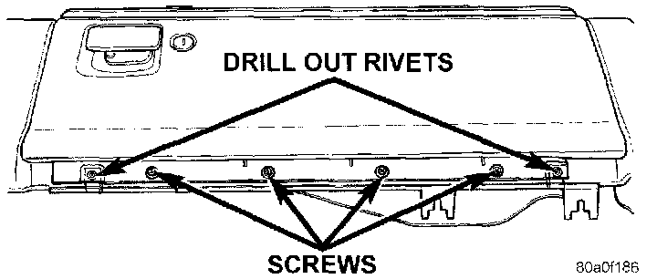

Glove Box
REMOVALWARNING: ON VEHICLES EQUIPPED WITH AIRBAGS, REFER TO AIR BAGS AND SEAT BELTS/AIR BAGS BEFORE ATTEMPTING STEERING WHEEL, STEERING COLUMN, OR INSTRUMENT PANEL COMPONENT DIAGNOSIS OR SERVICE. FAILURE TO TAKE THE PROPER PRECAUTIONS COULD RESULT IN ACCIDENTAL AIRBAG DEPLOYMENT AND POSSIBLE PERSONAL INJURY.
1. Disconnect and isolate the battery negative cable.
Glove Box Remove/Install:

2. Drill out the two rivets that secure the glove box hinge to the lower edge of the glove box module.
NOTE: The rivets are used to ease assembly during the manufacturing process, but do not require replacement following service.
3. Remove the four screws that secure the glove box hinge to the instrument panel armature.
4. Release the glove box latch and remove the glove box from the glove box module.
5. Reverse the removal procedures to install.